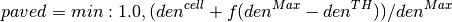

This document describes osm2hydro. osm2hydro is a set of (python) tools that can be used to extract information from OpenStreetMap (OSM) and the Shuttle Radar Topography Mission (SRTM) to kick-start hydrological and hydraulic modelling.
First a region of interest is clipped from an OSM file. From this the tools create shapefiles os selected features (OSM tags) and use those to create gridded maps with fraction of paved area, fraction of open water and fraction of unpaved area in each cell. The tools are fully configurable and can be used to generate other maps. They are part of the Deltares OpenEarth initiative (https://publicwiki.deltares.nl/display/OET/OpenEarth) and can be downloaded from goodle code at http://osm2hydro.googlecode.com)
Additionally, we created a procedure to use OSM data in the schematisation of a hydraulic overland flow model. OSM line elements that represent elevated landscape features are burnt onto an elevation map. We use the Shuttle Radar Topography Mission 90 meter elevation map (http://www2.jpl.nasa.gov/srtm/). Such landscape features are essential to include in hydraulic overland flow models as they may block floods and reroute water in other directions.
The methods we have developed to extract land use maps, is divided in the following steps (see also Figure 1):

Figure 1 Flow chart of the steps taken to derive land use (and specifically paved area fraction) maps from OSM
In some areas the different land-use polygons nearly cover the whole area. As such, the LU polygons can be used to generate the paved, unpaved and water covered area maps we are aiming to derive. However, in large areas (also in Western Europe) the coverage is (very) incomplete. For example, urban areas in and around Liege are hardly covered (see Figure 2). As such we have taken the following approach to come to a best estimate of paved area in larger areas:
Figure 3 Example of the area around Liege with a particularly poor OSM coverage. Paved area determined from Corine (top left), paved area as estimated from OSM coverage indicating paved land use (top right), paved land use estimated from road density (bottom left) and a merger of the two OSM-derived estimates
After the polygons have been extracted from the OSM file the first step is to generate high resolution grids from the shape files. The high resolution grids by default have a 10 times higher resolution in both the X and Y direction. The high resolution grids are then resampled to the final resolution, thus allowing the determination of fractional coverage in each cell. For all road classes an estimated width is configured and this is used to generate a (high resolution) grid in which the width is used to calculate the fraction covered by roads (assuming the road crossed that cell in a straight line). At the same time a road-density map is calculated using the same information but in which all roads have a unit width. From the density maps and a configurable percentile (default 90%) in the road density map a map maximum density () and a threshold value () for urban areas is determined. These values are then used in a simple equation (for all cells > ) to estimate the paved area within a cell:

The above equation (where,  a scaling factor is 0.75) basically generates
paved area (houses etc) for all cells that have a road density higher than
the threshold. This map (of paved area fraction) is then merged with the
paved area map that is determined from the polygons in OpenStreetMap.
The merge is done by first applying a multiplication factor to the paved
area determined from the road density and then taking the maximum of the two
maps. The multiplication factor (0.8 in this study) represents the
average paved area fraction in urban areas.
In a third step the resulting map is merged with the maps that holds
the fraction of road cover in the cell by adding the two maps together
while maximising the result to 1.0.
a scaling factor is 0.75) basically generates
paved area (houses etc) for all cells that have a road density higher than
the threshold. This map (of paved area fraction) is then merged with the
paved area map that is determined from the polygons in OpenStreetMap.
The merge is done by first applying a multiplication factor to the paved
area determined from the road density and then taking the maximum of the two
maps. The multiplication factor (0.8 in this study) represents the
average paved area fraction in urban areas.
In a third step the resulting map is merged with the maps that holds
the fraction of road cover in the cell by adding the two maps together
while maximising the result to 1.0.
Next two other maps are created, one representing the fraction of unpaved land use (from polygons that represent “green” areas) and one representing the fraction of open water. The open water fraction maps is derived from a combination of waterways in OSM, taking into account the river width if it is available, and land use classified as water (the combined water maps are maximized at 1.0).
Generally, the sum of the three maps (paved, unpaved, water) is not 1, therefore the maps are adjusted using the assumption that the water fraction map and the roads fraction maps are correct using the following steps:
Add the water fraction and paved area fraction maps and subtract the surplus (> 1.0) from the paved area map.
If the paved area fraction is not large enough to supply all the surplus coverage the surplus is subtracted from the unpaved fraction map
If the resulting total cover is larger than 1 it is assumed that the unpaved polygons are correct and the surplus is subtracted from the paved area any unassigned area in the resulting maps (total coverage < 1.0) is added to the unpaved fraction map finally, the road fraction map is used to “burn in” road coverage over all open water and unpaved area coverage
This is the main script. It needs an .ini file to retrieve it’s settings and execute programs and scripts.
This script converts gridded river sections into a shape file. Input:
rivermap: PCRaster map, containing the river sections as integers drainmap: Accumulated drainage map over the pixels, contained in rivermap.__add__
Both inputs are produced by a script called ‘srtm_burn_process.bat’ (no shell-version available yet) This script can be run from within srtm_burn_process.bat eventually
Convert a list of x,y pairs in a certain projection to another projection input:
proj_src: string, EPSG or proj4 string referring to projection of source coordinates proj_trg: string, EPSG or proj4 string referring to projection of target coordinates x: NumPy array, vector or 2D array of x-coordinates (source) y: NumPy array, vector or 2D array of y-coordinates (source)
Read geographical file into memory
Created on Fri Dec 7 15:00:29 2012
Usage:
gdal_density -S shapefile -E extent -C cellsize -o outputfile
-F outputformat [-r resamplefactor (default = 10)]
[-b burnvalue (default=1)][-G True|False][-D True|False]
[-t tempdir][-M]
-G Use gdalwarp instead of pcraster resample (default= False)
-D delete high resolution files after processing (Default=True)
-E [a,b,c,d] following gdal conventions
-t tempdir (to store the high resolution temporary files, default is the current dir
or the GDAL_DENSITY_TMP environment variable)
-M if specified the burn value is assumed to be given in metres
Converts a shape to a grid. The resuling grid holds (for each cell) the fraction (0-1) covered by the shapefile. The resamplefactor determines the accuracy of the final results. If r is one you get a maps with only zeros and ones (two possibilities). If r is two you get 5 possible fractions (0,0.25,0.5,0.75,1), if r is ten you get a map with 101 possible fractions etc...
requirements:
- gdal_warp
- gdal_rasterize
- pcraster 4.0 + python bindings
in length in metres out length in degree
” Determines the length of one degree lat/long at a given latitude (in meter). Code taken from http:www.nga.mil/MSISiteContent/StaticFiles/Calculators/degree.html Input: map with lattitude values for each cell Returns: length of a cell lat, length of a cell long
Make a map in metres to multiply with